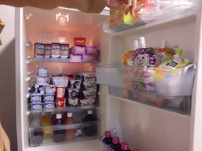

| 2012/01 18 Wed | ひめたん(*ゝω･*)ﾉその60 |
チョコレートはめっいーじ♪
今日は明治特集いっくよー!
{kind=link}
明治さんの撮影の時は、差し入れのお菓子のボリュームに毎回感動します!

{kind=link}
{kind=link}
すごいしょー？
{kind=link}
手作りレシピの動画撮影の時に、みんなが作ったっのお菓子を全部食べたのー(
o
>ω<
o
)!
ひめたん的には基本のトリュフと小さなデコチョコマフィンが
やーばい美味しかった
みなさんも作ってみてね♪
んあーもちろん
ひめたんおすすめ
２色のマカロン
にも挑戦してみましょ(^^)/
そう。明治の制服がめっちゃ可愛いの!
ブレザーと靴下はチョコレート色(
*
^^
*
)

ぴんく ×ちょこのスカートもお気に入りです♪
 ななせまる（西野七瀬ちゃん）、見た目はおとなしいコかと思ったけど、
ななせまる（西野七瀬ちゃん）、見た目はおとなしいコかと思ったけど、
内に秘めていて努力家な女の子だよね。
イラストもうまいしさぁ。ひめたん、そう思わない？
ななせまるかわいーいっ
えへ←
乃木坂始動したての頃からよく一緒にお泊まりしたもんだっ
ななせまる
（西野七瀬chan）
がひめたんの似顔絵書いたら、「ω」の口してるのー
それがみんないわく、めっちゃ似てるんだとか。
ななせまる大好きよーお(
*
/ω＼
*
)
{kind=link}
チョコレート色のブレザー似合ってた(*´ω｀*)
記者会見の時のエピソードみたいなのがあったら教えて欲しいです！
エピソード。
明治の方が楽屋に来ていただいて一人ずつ挨拶した時のこと。
みんな「学年・名前」言うなかでひめたん一人だけ
「中学３年生の中元日芽香です。ひめたんって呼んで下さい
 」
発言。
」
発言。
楽屋が和やかな雰囲気に包まれたとさ。わら
ひめたんのバレンタインDayの思い出とかある
そうぢゃねー(^^)
ひめたんの仲良しさん全員にお菓子配ろうと思ったんよ。
ぢゃけ去年のバレンタインは夜中の３時まで料理やらラッピングやら頑張って
翌朝の地元のイベントに死にそうになりながら出かけて行った思い出がある(-ω-)
でもみんなとチョコ交換したら目覚めたよー♪
新曲「ぐるぐるカーテン」を聞いた感想は？
「ぐるぐるカーテン」は乃木坂46らしい曲だと思う!
メロディは落ち着いてて、かわいらしくて、
歌詞はおんなのこおんなのこしてる(
*
^^
*
)
学校生活がテーマなんだよね。等身大な感じが好きですね。
明治チョコレートのＣＭ挿入歌ですよー♪
乃木坂ってどこ見たけどカップリング曲に衝撃受けたよ～
初めて聴いた時どうだった？？
デビューシングルのカップリング曲の『会いたかったかもしれない』を聴いてどう思った？
「会いたかった」
はひめたんが乃木坂46スターティングメンバーオーディションの時に
歌って踊った曲なのー!
思い出深いし、未だによく歌うし、大好きな曲です(
*
^^
*
)
だから
「会いたかったかもしれない」
聴いた時はめっちゃびっくりしたー!!!
「会いたかった」
はもちろん好きだけど、でも
「会いたかったかもしれない」
も
たくさんの人に愛されたらいいなって思います♪
...歌いたかったかもしれない('・ω・`)
ひめにょんが“ぐるぐるカーテン♪”というタイトルだけを聞いた時、
自分ではどう思ったか、エピソードが有ったら教えて欲しいな！
「え？」
ってなりますよね最初は。
なんかめっちゃ単純だしーって思った(^^)わら
みゅみゅ
(若月佑美chan)は「この曲、これから
ぐるカー
とか呼ばれるんだろうな(ω)」
って言っとった。
ぐるカー。可愛いぢゃん(
o
>ω<
o
)!
チョコのが好きなら、今回の明治とのタイアップは
めっちゃ嬉しいのかな？
めっちゃめっちゃめーっちゃ嬉しいですよ(ω)♪
あのね、
ろってぃー
(川村真洋chan)すごいんよ!
乃木坂の最終オーデの自己PRで自分の夢を語った中で、
「いつかチョコレートのＣＭに出ることが夢です!」
って言っとったんよね。
マネージャーさんはドキッとしたらしいー
ひめたん今年のバレンタインは何作る予定？
ひめたんのオススメは
２色のマカロン
です(^^)/
ひめたんもマカロン作ったことあるけど、ちょい難しいんよねー
でも挑戦してみて下さい!
デコチョコは簡単で美味しいよー。
デコデコ～♪←
ひなちま
（樋口日奈chan）の真似(∀)わら
ひめたんはバレンタインにチョコを渡す予定はあるのかな？
もちろんもちろん明治ミルチで手作りしますよ!
...だけど乃木坂のみんな美意識が強いからなー受け取ってくれるか心配('ω`)
学校の子はみんな受験生モード全快ぢゃけど
空気ぶち壊して明治のミルチ配ってきます(`・・)ゞ
特集作るしかー!ってくらいたくさんの質問
ありがとうございました(^^)
みなさんといっぱいお話しできて楽しかったーいぇす!!!!!
ひめたん